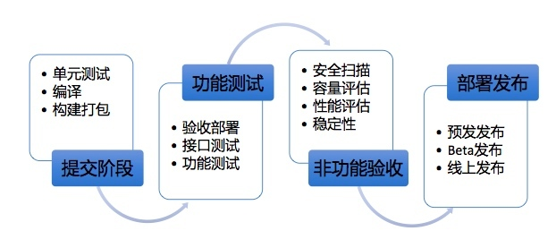
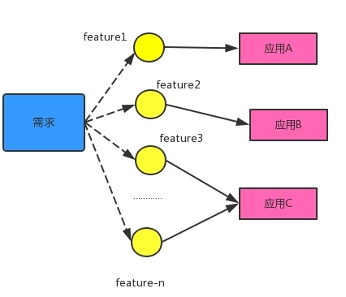
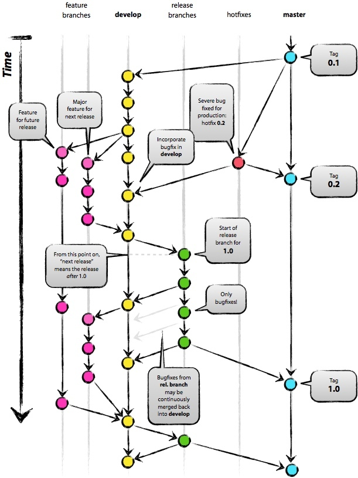
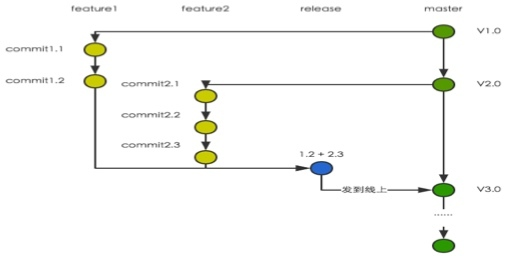

- 00 开篇词 带给你不一样的运维思考.md
- 01 为什么Netflix没有运维岗位？.md
- 02 微服务架构时代，运维体系建设为什么要以应用为核心？.md
- 03 标准化体系建设（上）：如何建立应用标准化体系和模型？.md
- 04 标准化体系建设（下）：如何建立基础架构标准化及服务化体系？.md
- 05 如何从生命周期的视角看待应用运维体系建设？.md
- 06 聊聊CMDB的前世今生.md
- 07 有了CMDB，为什么还需要应用配置管理？.md
- 08 如何在CMDB中落地应用的概念？.md
- 09 如何打造运维组织架构？.md
- 10 谷歌SRE运维模式解读.md
- 11 从谷歌CRE谈起，运维如何培养服务意识？.md
- 12 持续交付知易行难，想做成这事你要理解这几个关键点.md
- 13 持续交付的第一关键点：配置管理.md
- 14 如何做好持续交付中的多环境配置管理？.md
- 15 开发和测试争抢环境？是时候进行多环境建设了.md
- 16 线上环境建设，要扛得住真刀真枪的考验.md
- 17 人多力量大vs.两个披萨原则，聊聊持续交付中的流水线模式.md
- 18 持续交付流水线软件构建难吗？有哪些关键问题？.md
- 19 持续交付中流水线构建完成后就大功告成了吗？别忘了质量保障.md
- 20 做持续交付概念重要还是场景重要？看笨办法如何找到最佳方案.md
- 21 极端业务场景下，我们应该如何做好稳定性保障？.md
- 22 稳定性实践：容量规划之业务场景分析.md
- 23 稳定性实践：容量规划之压测系统建设.md
- 24 稳定性实践：限流降级.md
- 25 稳定性实践：开关和预案.md
- 26 稳定性实践：全链路跟踪系统，技术运营能力的体现.md
- 27 故障管理：谈谈我对故障的理解.md
- 28 故障管理：故障定级和定责.md
- 29 故障管理：鼓励做事，而不是处罚错误.md
- 30 故障管理：故障应急和故障复盘.md
- 31 唇亡齿寒，运维与安全.md
- 32 为什么蘑菇街会选择上云？是被动选择还是主动出击？.md
- 33 为什么混合云是未来云计算的主流形态？.md
- 35 以绝对优势立足：从CDN和云存储来聊聊云生态的崛起.md
- 36 量体裁衣方得最优解：聊聊页面静态化架构和二级CDN建设.md
- 37 云计算时代，我们所说的弹性伸缩，弹的到底是什么？.md
- 38 我是如何走上运维岗位的？.md
- 39 云计算和AI时代，运维应该如何做好转型？.md
- 40 运维需要懂产品和运营吗？.md
- 41 冷静下来想想，员工离职这事真能防得住吗？.md
- 42 树立个人品牌意识：从背景调查谈谈职业口碑的重要性.md
- 划重点：赵成的运维体系管理课精华（一）.md
- 划重点：赵成的运维体系管理课精华（三）.md
- 划重点：赵成的运维体系管理课精华（二）.md
- 新书 《进化：运维技术变革与实践探索》.md
- 特别放送 我的2019：收获，静静等待.md
- 结束语 学习的过程，多些耐心和脚踏实地.md
17 人多力量大vs.两个披萨原则，聊聊持续交付中的流水线模式
在前面5期文章中，我们分别详细介绍了持续交付体系基础层面的建设，主要是多环境和配置管理，这些是持续交付自动化体系的基础，是跟我们实际的业务场景和特点强相关的，所以希望你一定要重视基础的建设。
本期文章是我们持续交付系列的第6篇文章，从本期开始，我们进入到交付流水线体系相关的内容介绍中。
持续交付流水线简要说明
从一个应用的代码提交开始，到发布线上的主要环节，整个流程串起来就是一个简化的流水线模式。如下图所示：

我们前面介绍了持续交付的多环境以及配置管理，而流水线模式的整个过程正是在这个基础上执行，所以它的某些环节和要素与我们的多环境是有一些交叉的。比如，功能测试会在线下相关的几个环境上完成，比如我们前面介绍到的开发联调环境、项目环境和集成测试环境。
但是，它们要达成的测试目的是不同的：对于非功能验收，我们会在线上的预发环境完成，因为预发环境更接近真实场景，所以像容量、性能、安全这些跟线上稳定性相关的能力验收，越接近真实环境，效果越好。
后面几期文章，我会结合我们的实践，分环节来介绍。本期文章我们先看项目需求分解和开发模式选择。
项目需求分解
持续交付我认为更多的是针对应用层面，所以项目需求分解这一部分，这里我们就不展开讲了。这里我们的工作重点，就是将项目管理中的需求与持续发布中的应用这二者很好地关联起来。
比较通用的做法，就是要求业务架构师在做需求分析和功能设计时，要针对一个需求进行拆分，最终拆分成一个个的功能点，这些功能点最终落实到一个个对应的应用中，对应的逻辑体现就是应用代码的一个feature分支。
如下图所示：

举个简单的例子，比如我们要做大促的优惠活动，同一店铺商品购满500元，可以使用10元店铺内优惠券，同时还可以使用10元全站优惠券。
这样一个需求最终拆解下来，可能需要店铺应用支持多优惠活动的叠加，同时下单应用和购物车应用在计算价格时也要设定相关的优惠逻辑，这一个需求可能就拆出三四个功能点。
这样做的好处就是，从一开始的需求管理维度，就确定了最终多个应用联调、测试以及最终发布的计划和协作方式，从而就会让我们明确同一个项目环境中到底需要部署哪些应用，这些应用的发布顺序怎样安排。
比如，如果A应用依赖B应用，那么B应用就必须优先发布。所以，上述这个过程对于项目进度管理、团队协作以及最终的发布计划都是有帮助的。
讲到这里，你是不是又进一步感受到了运维的重要性呢？
当然，每个公司都有不同的项目管理方式，这里我们只要明确做好需求拆分与应用功能的对应即可。
提交阶段之开发模式选择
在代码提交阶段，我们遇到的第一个问题，就是分支管理问题。这反映出研发团队协作模式的问题。
我们所熟知的开发协作模式有以下三种：
- 主干开发模式。这也是极限编程里提倡的一种模式，每一次代码提交都是合并到master主干分支，确保master随时是可发布状态。但是它对代码开发质量以及持续集成自动化和完善程度要求非常高，通常一般的团队很难做到。
- gitflow开发模式。因为git的流行，gitflow是专门基于git代码管理的工作流工具，它的特点是在master分支之外，会有一条常驻develop开发分支，所有功能开发和缺陷修复都在这个分支上再建立分支。发布时合入一个从master分支中签出的release分支，最终发布的是release分支代码，然后release分支再合并回master和develop分支。如下图所示：

- 分支开发模式。相对于gitflow模式，分支开发模式会简单清晰很多。它的特点是，功能开发或缺陷修复从master签出独立的一个feature或bug分支，发布前从master分支签出一个release分支，并将要发布的feature或bug分支合入。发布完成后，release分支合入master分支。如下图所示：

开发模式的选型原则
上面我分别介绍了三种开发模式的特点，那么，在实际操作中，我们选择哪一种比较好呢？
这里的选型原则就是：一看这几种模式的适用场景；二看我们实际的使用场景是怎么样的。
下面，我们分别看看主干开发和gitflow开发这两种模式。
主干开发模式。它的特点是，所有的代码变更直接提交到master分支，这种情况比较适合规模较大的应用，这类应用自身集中了所有的需求功能点，且需求串行开发，需要多人协作共同完成同一个需求，发布时间点明确、统一。
这种模式最简单，且便于管理，不需要再建立各种分支。我们之所以在极限编程中提倡这种模式，也是因为这种模式最简单，最便捷，也最高效。因为我们的软件架构在早期还是单体结构且分层架构的，代码相对集中，所以，主干开发模式也是适用的。
但是，在现实场景下，需求总是层出不穷的，所以就需要需求并行开发。这就会产生这样一种情况：同一应用会有多个团队在同时提交不同需求的代码，且每个需求发布的时间点是不同的。
所以如果采用主干开发模式，就可能会将还没有经过测试验证的代码发布到线上。这时，我们就需要在代码里预设很多功能开关配置，这样一来，在应用正式上线前，代码可以发布，但是功能不开放，而这样也必然会增加代码的复杂度。
所以，就有了gitflow开发模式。
gitflow开发模式能够适应并行开发，解决上述我们所说的问题，而且gitflow工具能够从技术层面帮我们解决各种分支合并问题。
通过上面gitflow的图示，我们可以看出，gitflow开发模式带来的分支的管理代价还是比较高的，且随着分支增加，开发人员之间的沟通协作成本也会随之提高。
同时，gitflow开发模式还是在代码相对集中的应用场景中更加适用，因此，基于这个应用完成较多的并行需求，就需要通过多个分支来管理。
在现实场景中，尽管我们日常需求非常多，但是这些需求拆解下来的功能都是集中在某个或某几个应用上的吗？
其实不然。我们从原来的单体或分层架构演进到微服务架构后，带来的一个好处就是每个应用的职责更加明确和独立，与此同时，针对应用的开发，团队也更加自制，规模更小，符合“两个披萨原则”。
所以，一个需求拆解出功能，对应到每个应用上，这样可以很好地控制并行的功能点数量，大大降低开发协作的沟通复杂度，即使有合并冲突问题，往往内部沟通一下就可以很快解决。
而实际上，我们设想的这种复杂的gitflow场景，在微服务架构下的组织架构中极少存在。
在此，经过对主干开发模式和gitflow开发模式这二者的综合对比，结合前面我对分支开发模式的介绍，我们可以看出，分支开发模式简单清晰，在实际操作中更适合我们使用。
最后，留个问题给你：你对于开发协作模式是如何选择的？存在哪些问题？有什么更好的建议？
欢迎你留言与我讨论。
如果今天的内容对你有帮助，也欢迎你分享给身边的朋友，我们下期见！
© 2019 - 2023 Liangliang Lee. Powered by Vert.x and hexo-theme-book.